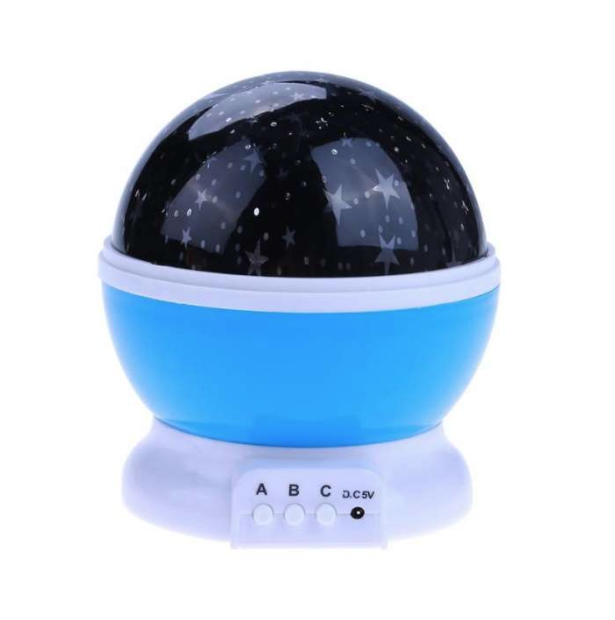

Proiector Rotativ de Stele și Lună, Albastru, Mov sau Roz
Proiectorul rotativ de stele și lună Star Master este un dispozitiv de iluminat decorativ, conceput pentru a crea efecte vizuale inspirate din cerul nocturn. Prin proiectarea unor modele luminoase reprezentând stele, lună și puncte strălucitoare, lampa contribuie la transformarea atmosferei din dormitoare, camere pentru copii și alte spații interioare.
Culoare selectată: Albastru
Produsul are stoc declarat 0 buc. Prețul afișat de 0,00 Lei este o valoare de catalog, nu un preț de vânzare confirmat. Solicită disponibilitatea, prețul final și condițiile comerciale înainte de comandă.
DETALII PRODUS
Descriere
Proiectorul rotativ de stele și lună Star Master este un dispozitiv de iluminat decorativ, conceput pentru a crea efecte vizuale inspirate din cerul nocturn. Prin proiectarea unor modele luminoase reprezentând stele, lună și puncte strălucitoare, lampa contribuie la transformarea atmosferei din dormitoare, camere pentru copii și alte spații interioare.
Disponibil în trei variante de culoare – albastru, mov și roz, produsul oferă posibilitatea alegerii unui model potrivit preferințelor individuale și stilului de amenajare. Cele trei variante păstrează designul caracteristic Star Master, cu o cupolă superioară închisă la culoare, decorată cu simboluri astronomice, și o bază compactă prevăzută cu butoane de control.
Efecte luminoase inspirate din cerul nocturn
Principala funcție a proiectorului este redarea unor modele decorative de stele și lună pe pereții și tavanul încăperii.
Lumina emisă prin cupola decorativă creează un ansamblu de forme luminoase, oferind o alternativă vizuală la lămpile ambientale obișnuite.
Efectele sunt mai vizibile în încăperile întunecate sau cu iluminare redusă, unde contrastul dintre proiecție și suprafețele din jur este mai pronunțat.
Proiecție rotativă pentru un decor dinamic
Funcția de rotație permite deplasarea modelelor luminoase, transformând proiecția într-un efect vizual aflat în mișcare.
Această caracteristică oferă o experiență decorativă diferită față de iluminatul static și poate fi utilizată pentru realizarea unui ambient tematic în camerele copiilor.
Mișcarea stelelor proiectate adaugă dinamism încăperii, fără a necesita montarea unor decorațiuni suplimentare pe pereți sau tavan.
Comandă și informații
Site-ul funcționează ca un catalog B2B. Nu există plată online sau coș de cumpărături. Momentan produsul nu este disponibil în stoc.
Discută pe WhatsApp →DIN ACEEAȘI CATEGORIE